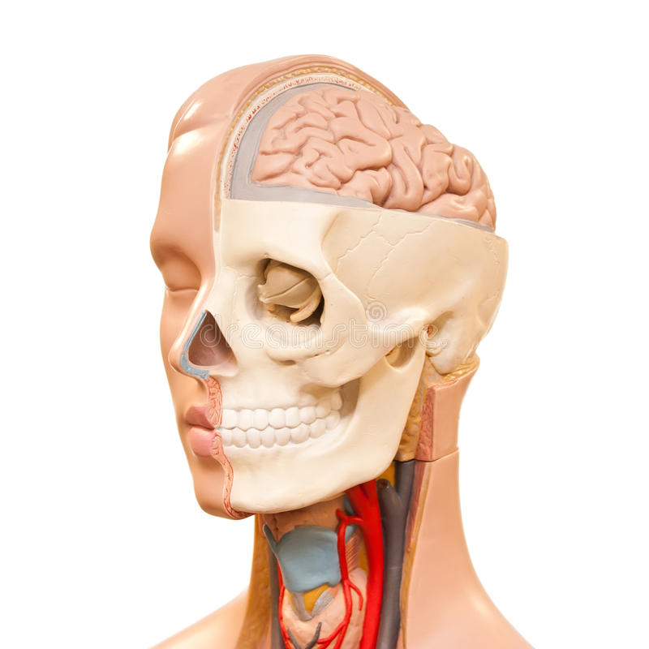

La tête est la partie de l’anatomie du corps humain portée par le cou. L’homme, comme tous les primates, a une tête très différenciée, avec un cerveau important, un front, de grands yeux placés à l’avant, un nez, des joues, une bouche et deux oreilles sur chaque côté de la tête. Sa face est aplatie et particulièrement mobile : on l’appelle le visage. Au sommet de la tête se trouve la chevelure. Les os de la tête forment le crâne, dont la mâchoire porte la denture. La tête humaine augmente d'approximativement 15 % jusqu'à l'âge adulte. De plus, il est à noter que c'est lors de l'adolescence que cette poussée accrue s'effectue